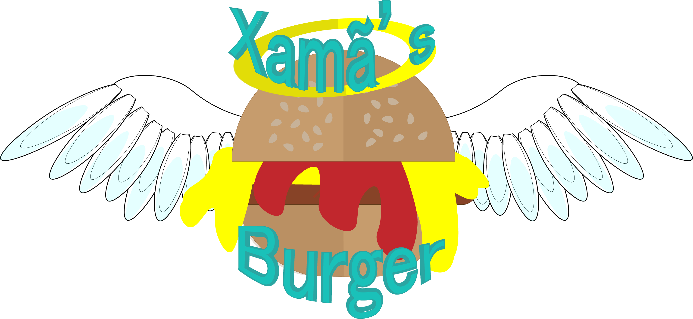

<mat-sidenav-container class="sidenav-container">
  <mat-sidenav #drawer 
      class="sidenav"
      fixedInViewport
      [attr.role]="(isHandset$ | async) ? 'dialog' : 'navigation'"
      [mode]="(isHandset$ | async) ? 'over' : 'side'"
      [opened]="(isHandset$ | async) === false">
    <mat-toolbar>Menu</mat-toolbar>
    <mat-nav-list>
      <a mat-list-item href="home">Home</a>
      <a mat-list-item href="sobre">Sobre nós</a>
      <a mat-list-item href="promocoes">Promoções</a>
      <a mat-list-item href="contato">Contato</a>
    </mat-nav-list>
  </mat-sidenav>
  <mat-sidenav-content>
    <mat-toolbar color="primary">
      <button
        type="button"
        aria-label="Toggle sidenav"
        mat-icon-button
        (click)="drawer.toggle()"
        *ngIf="isHandset$ | async">
        <mat-icon aria-label="Side nav toggle icon">menu</mat-icon>
      </button>
      <span class="logo" > </span>
      <span class="spacer"></span>
      <a href="#home">Home</a>
      <a href="#sobre">Sobre nós</a>
      <a href="#promocoes">Promoções</a>
      <a href="#pedido">Peça aqui</a>
    </mat-toolbar>
    <ng-content></ng-content>
  </mat-sidenav-content>
</mat-sidenav-container>
